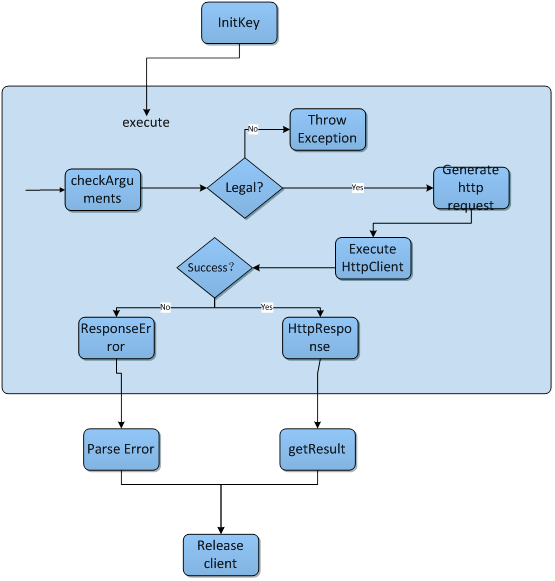

Task概述
一般来说一个Task对应了一个OSS API，比如Delete Object的功能对应到的就是DeleteObjectTask。每个Task里构造了一个Http请求，并发起这个请求，获得来自服务器的HttpResponse。
所有各式各样的task均继承自抽象基类Task。Task定义了一些基本方法，其子类一般只是对这些方法有些小的改动或者增添，这些基本方法如下：
- initKey：设置accessKey和accessId
- checkArguments：检查参数的合法性，如果参数不正确，则抛出IllegalArgumentException，每次执行前都进行一遍检查
- execute：构造并发起http请求，返回HttpResponse
- generateHttpRequest：构造http请求
- getResponseError：获取阿里云服务器返回的错误信息
- releaseHttpClient：释放httpClient，每次执行后都需要释放，否则系统资源将很快被用光。
此外大部分Task的子类还实现了getResult方法，用于返回每个task执行后的结果，比如bool值用来判断操作是否成功，或者是返回由xml解析出来的模型。一般task的运作流程如下图所示：

事实上，对于我们的SDK，有两种使用方式：
- 使用OSSClient。OSSClient中封装了很多简单常用的功能，基本能够满足简单直观的需求。
- 使用Task。对于某些特殊需求OSSClient可能并不能够完全满足。而Task是对OSS API的直接封装，包括了API中所有提供的特性，如果需要深度定制，推荐使用Task对象。
在使用Task时，有必要进行几点说明：
- 在初始化Task后，必须调用initKey方法对accessKeyID和accessKeySerect进行设置，否则无法正常访问OSS
- 调用getResult()方法后，无论是正常获取结果还是抛出异常，Http资源将会全部被释放，如果需要再次访问，需要重新实例化Task对象
- 一般来说只需要调用initKey和getResult方法即可，不需要调用其他抽象方法例如checkArguments, execute等。但是有可能存在某些Task类包含一些公共方法来提供某些请求选项